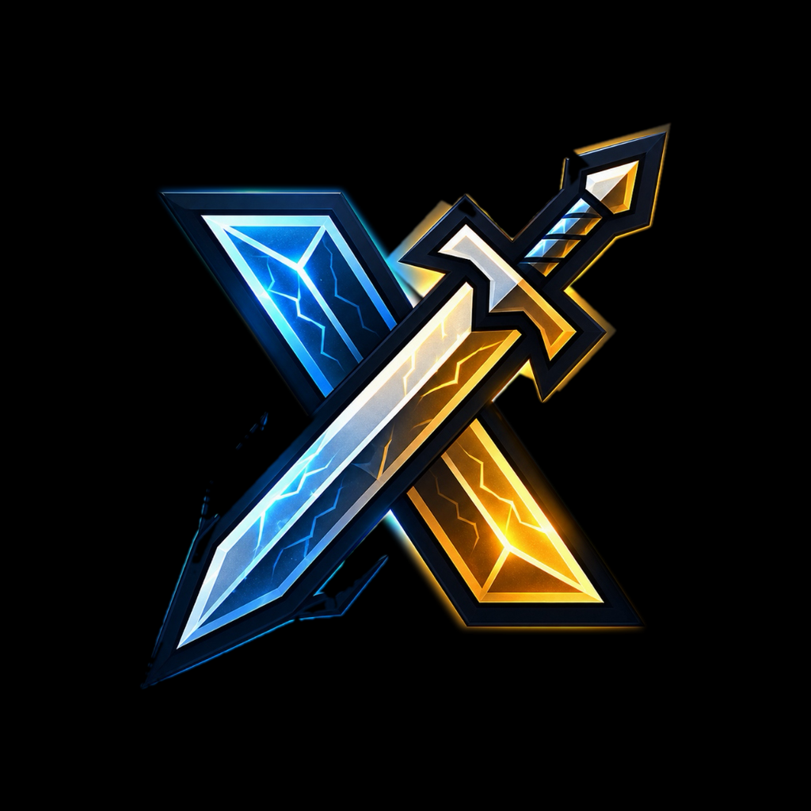
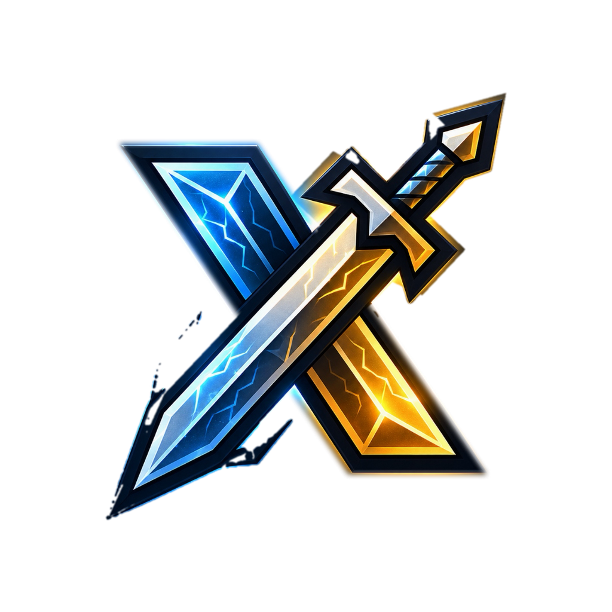
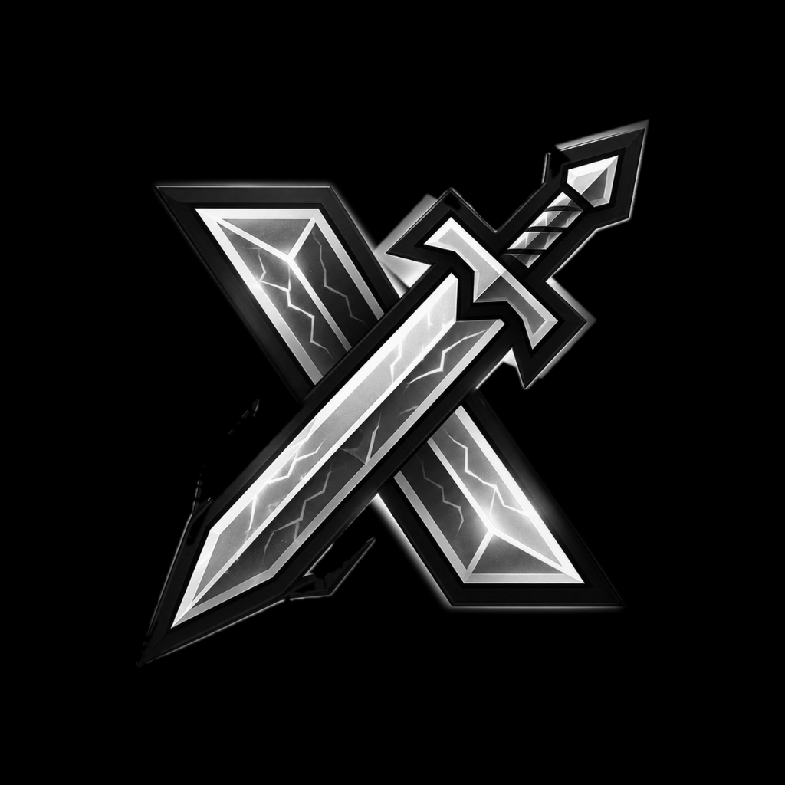
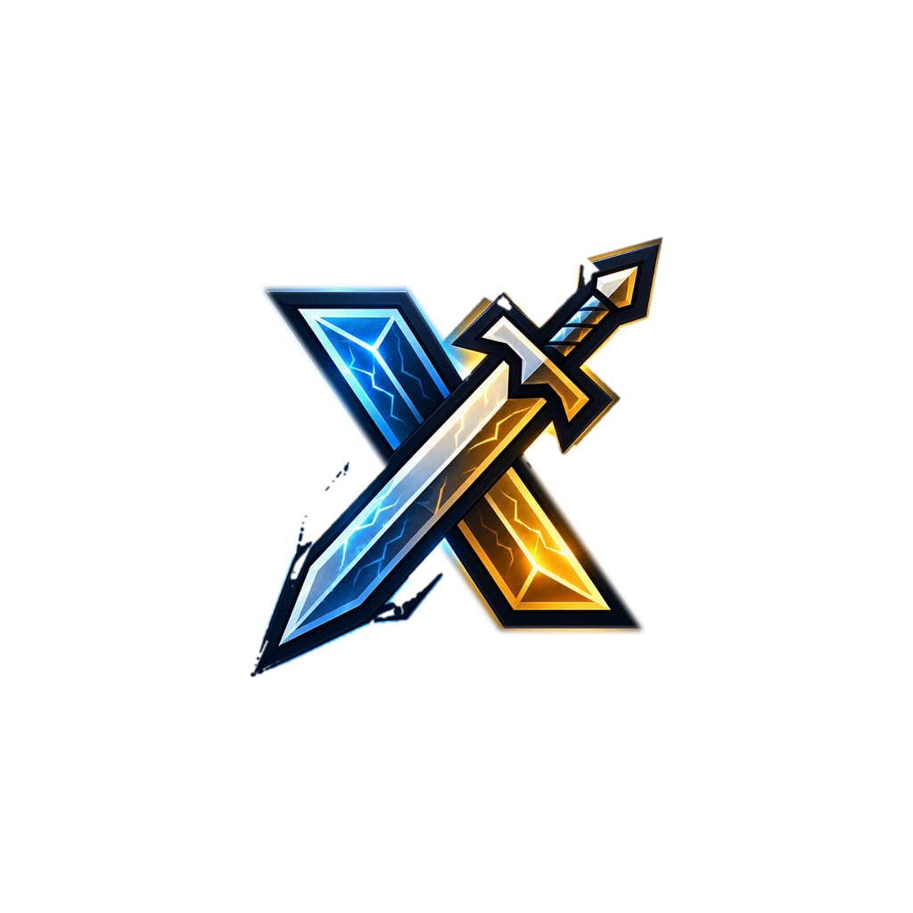
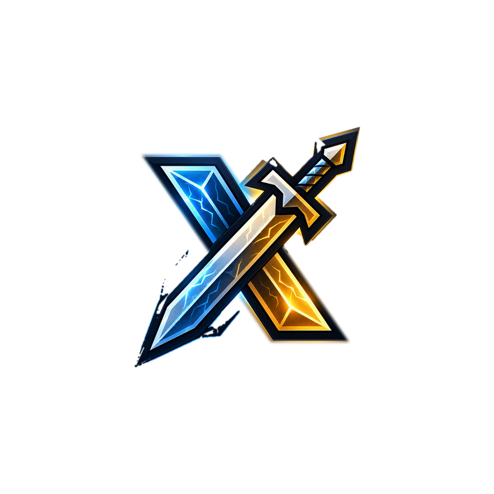
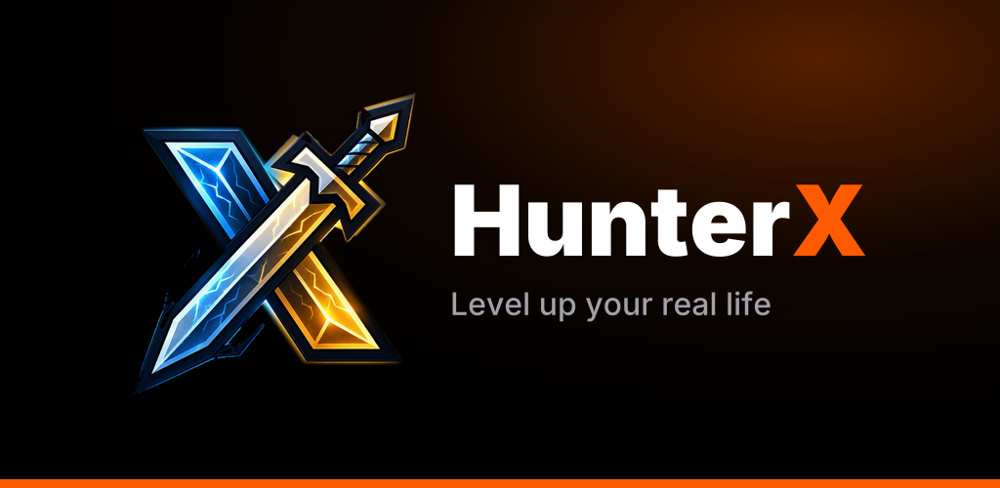

HunterX icon preview
Generated by npm run assets. Check that nothing important is cropped in any shape.
iOS



Android adaptive icon

Splash (Android 12+ 192dp circle)

Notification icon
HunterX · Your streak is on the line
Web


